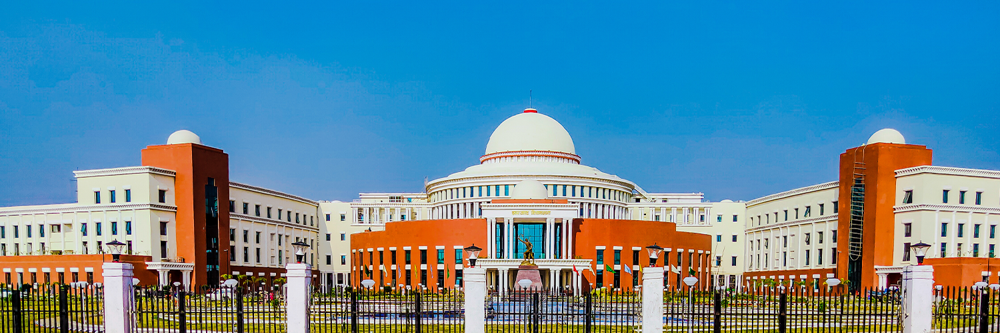

Jamshedpur is a city in the state of Jharkhand.
Jamshedpur is also known as Tatanagar or Steel City throughout India.
Jamshedpur is named after its founder Jamsedji Nausarwanji Tata.
Earlier the name of Jamshedpur was Sakchi, where most of the tribal people lived.
Jamshedpur's high-quality steel is famous all over India and abroad.
The city comes under the category of a major industrial city in India.
Jamshedpur ranks 37th in the country in terms of industrial development.
The hilly area here attracts tourists, and every month hundreds of people come here to visit.
The major lakes here are Dimna and Hudko, there is also a confluence of two rivers called Dumuhani.
In Jamshedpur, there is also an international cricket stadium and a football stadium, named Keenan Stadium.
 Bokaro Steel City is one of the planned cities of India, a major industrial centre and the fourth largest
city in the Indian state of Jharkhand.
It is the administrative headquarters of Bokaro district.
The city stands at an elevation of 210 metres (690 feet) above sea level and has an urban area of 183 square
kilometres (71 square miles).
Bounded on the east by Dhanbad and Purulia, on the west by Ramgarh and Hazaribagh, on the north by Giridih
and on the south by Ranchi.
It is accessible through National Highway NH 143 & NH-18.
Bokaro Steel City is one of the planned cities of India, a major industrial centre and the fourth largest
city in the Indian state of Jharkhand.
It is the administrative headquarters of Bokaro district.
The city stands at an elevation of 210 metres (690 feet) above sea level and has an urban area of 183 square
kilometres (71 square miles).
Bounded on the east by Dhanbad and Purulia, on the west by Ramgarh and Hazaribagh, on the north by Giridih
and on the south by Ranchi.
It is accessible through National Highway NH 143 & NH-18.

Ranchi is a city which is the capital of Jharkhand state.
Ranchi is also known for its natural beauty.
There are many beautiful lakes here, and this city is also called the city of lakes.
Ranchi is also included in the major industrial centers of Jharkhand.
Ranchi has also been included in the Smart City Mission launched by Prime Minister Narendra Modi.
Indian cricket captain Mahendra Singh Dhoni's house is also located in Ranchi.
Some of the major tourist places of Ranchi are as follows, Gonda Hill, McCluskeyganj, Rock Garden, Fish
House, Birsa Biological Park, Tagore Hill and Tribal Museum etc.
Mainly Hindi, English and Khortha languages are spoken here.
The total population of Ranchi is around 1500000.
Ranchi is connected to all major means of air, rail and road. The name of the airport located in Ranchi is
Birsa Munda Airport.